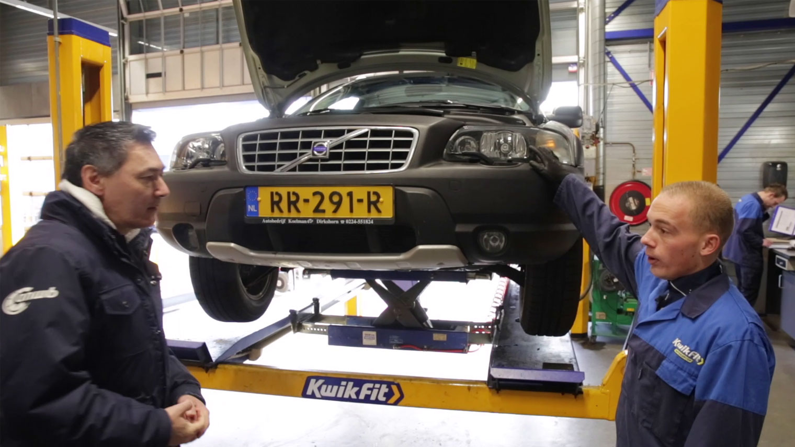
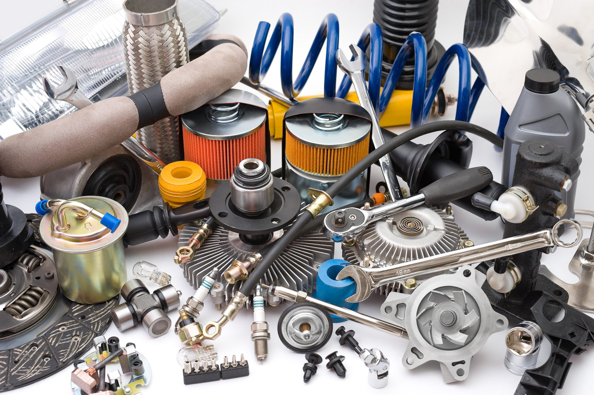

APK
APK staat voor Algemene Periodieke Keuring. Deze verplichte technische keuring richt zich in de eerste plaats op de veiligheid van uw auto. Daarnaast is er aandacht voor het milieu door het meten van de uitlaatgassen en controle op lekkage van vloeistoffen. Een derde controlepunt betreft de registratie van uw auto. Een check of uw auto overeenkomt met de technische gegevens zoals die zijn geregistreerd bij de RDW.
Wanneer is uw auto APK-plichtig?

Heeft u een auto met benzinemotor of elektromotor die na 2005 is toegelaten door de RDW? Dan moet u deze 4 jaar na de eerste tenaamstelling laten keuren, vóór de vervaldatum APK. Hierna geldt nog tweemaal een 2-jaarlijkse keuringsplicht en daarna moet uw auto elk jaar worden gekeurd. Voor dieselauto’s en auto’s op gas auto’s geldt de eerste keuringsplicht na 3 jaar. Hierna moeten deze auto’s elk jaar worden gekeurd, ook weer vóór de vervaldatum APK.
Wat wordt gecontroleerd bij een APK?
Tijdens de APK controleert onze vakbekwame keurmeester uw auto nauwkeurig op alle essentiële onderdelen. Deze zijn direct van invloed op de veiligheid van uw auto en hiermee op de verkeersveiligheid. Banden, remmen, wielophanging, schokdempers, stuurinrichting, verlichting, carrosserie, veiligheidsgordels: niets ontsnapt aan zijn deskundige blik. Met speciale diagnoseapparatuur voert hij ook een uitlaatgastest uit om te meten of uw auto aan de wettelijke emissie-eisen voldoet. Verder controleert hij uw auto op eventuele vloeistoflekkage en checkt hij of de registratie van het voertuig in orde is.
Direct repareren of vervangen
Prettig voor u: bij AutoFix kunt u een eventueel defect direct laten repareren en versleten onderdelen laten vervangen. Hiervoor nemen wij altijd eerst contact met u op en bieden u een heldere offerte. Mocht een onderdeel onverhoopt niet op voorraad zijn, dan hebben wij dit binnen kortste keren in huis dankzij de uitstekende Bosch-onderdelenvoorziening. Niet eens met de afkeuring? Dan kunt u bezwaar aantekenen bij de RDW. Hieraan zijn wel kosten verbonden.